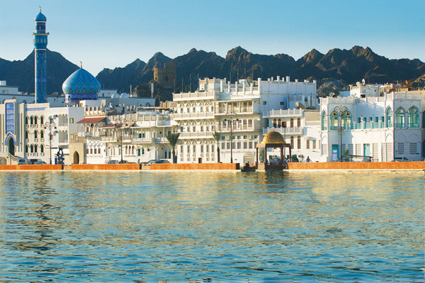
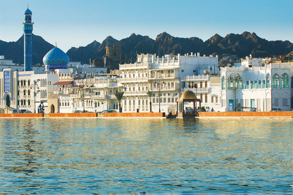

Je l’avais repéré de loin celui là. Dès mon arrivée à Dubai, je voyais ce bâtiment sortir du reste de l’horizon et s’élever haut dans le ciel. Il était étrange, avec sa forme de flèche qui semblait défier le ciel. La nuit, il brillait fort dans le paysage nocturne.
Grand curieux, je n’ai pas résisté à l’envie de me rapprocher de ce lieu. En chemin, je posais quelques questions aux passants. J’apprenais que cette drôle de tour n’était autre que la plus grande tour du monde : la tour Burj Khalifa, qui avait terminé son ascension en 2010 et dans laquelle on pouvait accéder à des terrasses panoramiques.
Piqué de curiosité, je suis allé voir ces fameux points d’observation.
Quelle expérience! Mieux vaut ne pas avoir le vertige lorsque vous observez le sol à plus de 400 mètres. J’ai soudain eu l’incroyable sensation de voler. Les maisons devenaient minuscules, les habitants disparaissaient et même les buildings alentours faisaient pâle figure. On pouvait y voir toute la grandeur et l’adorée démesure de ce pays. Je ne pouvais m’empêcher de jeter un oeil aux informations communiquées sur ce projet et je n’ai pas été déçu !
Allez, quelques chiffres comme on aime avec les Emiratis :
Burj Khalifat ce n’est pas moins de 163 étages grimpant jusqu’à 584 mètres. Le bâtiment monte jusqu’à 828 mètres (et on ne compte pas la taille de l’antenne bien sûr, ce serait trop facile).
Véritable symbole de démesure, la tour est visible à 95km à la ronde.
Cette tour contient aussi les ascenseurs les plus rapides du monde avec 18m/s (pourquoi faire les choses à moitié quand on a le budget pour en faire trop, hein?)
Il contient aussi la terrasse panoramique la plus haute du monde, la plus haute piscine, discothèque et mosquée.
Encore des chiffres? Avec plaisir!
Une superficie pareil, ça prend combien de temps à être lavé ? 3 à 4 mois avec 18 lave-glaces motorisés.
Un bâtiment aussi démesuré, ça coûte combien à faire construire au juste ? Oh, des broutilles : 1,5 milliard de dollars.
C’est joli ce revêtement qui reflète le soleil, qu’est ce que c’est ? Pas moins de 28 261 panneaux de verre soit 17 stades de football, et coulés à la main je vous prie.
Et comme ce n’est jamais assez, Dubaï se lance dans la construction d’un tour encore plus grande. Si si, encore plus grande (mais la taille reste encore secrète!). Ce projet évoquera la forme d’un minaret et sera doté d’une plateforme d’observation, de restaurants et d’hôtels. On attend avec impatience!


 
